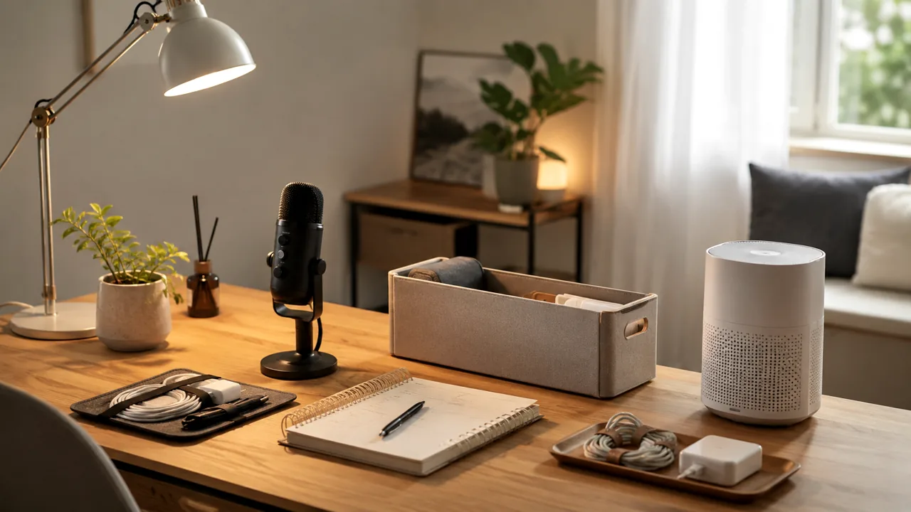
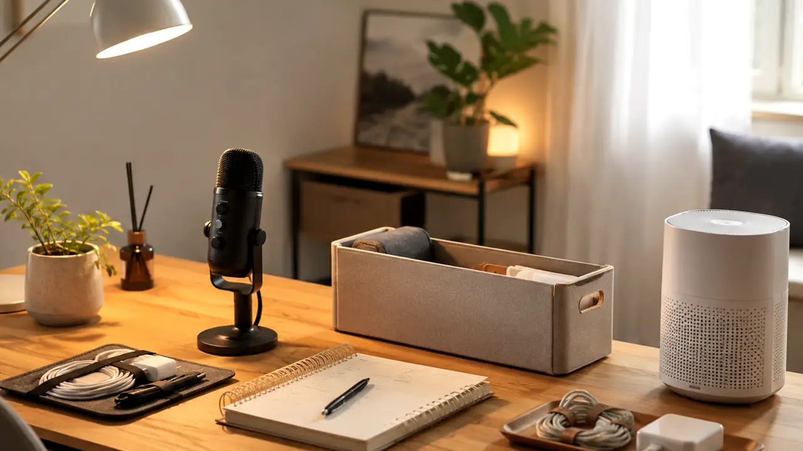
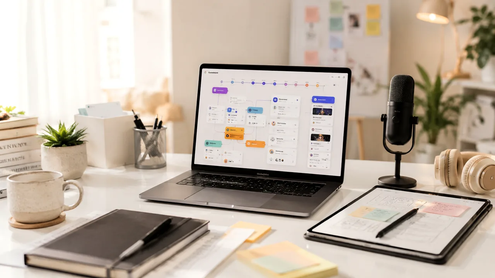
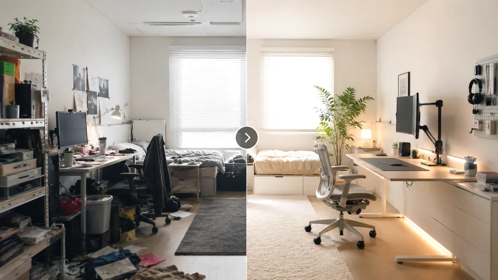
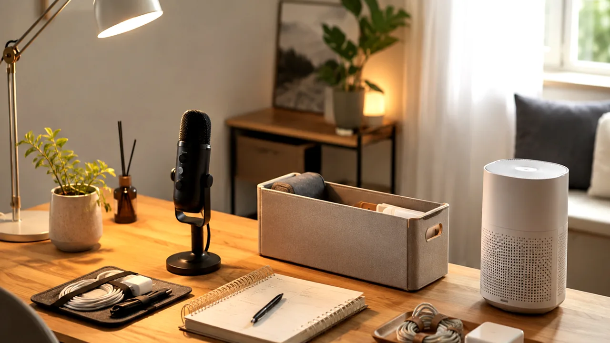

TrendFlow Guide1. 퇴근 후 부업 장비 우선순위 비교
퇴근 후 1시간 부업을 시작할 때 무엇부터 준비하면 좋은지 우선순위로 정리합니다.
글 보기 →트렌드 쇼핑은 인기 상품보다 구매 전 판단 기준을 먼저 정리하는 카테고리입니다.

Category Overview먼저 필요한 글 하나만 골라서 읽어보세요.

TrendFlow Guide퇴근 후 1시간 부업을 시작할 때 무엇부터 준비하면 좋은지 우선순위로 정리합니다.
글 보기 →AI 영상과 쇼츠 제작 입문자가 마이크·조명·저장장치를 어떤 순서로 볼지 정리합니다.
글 보기 →
TrendFlow Guide자취방에서 수납·습도·조명 문제 중 무엇을 먼저 해결할지 정리합니다.
글 보기 →
TrendFlow Guide단일 상품보다 문제 해결형 묶음으로 소개하기 좋은 상품 조합 기준입니다.
글 보기 →
TrendFlow Guide쇼츠와 제품 리뷰를 시작할 때 과하지 않게 갖추면 좋은 촬영 소품 기준입니다.
글 보기 →바로 사기 전에 내 상황과 맞는지 먼저 확인하세요.
| 주제 | 글 제목 | 읽는 방식 |
|---|---|---|
| 부업 장비 | 퇴근 후 부업 장비 우선순위 비교 | 내 상황 확인 → 필요한 기준 보기 → 하나만 적용하기 |
| AI 영상 장비 | AI 영상 제작 입문 장비 실사용 체크 | 내 상황 확인 → 필요한 기준 보기 → 하나만 적용하기 |
| 생활 개선 | 자취방 생활 개선 아이템 우선순위 | 내 상황 확인 → 필요한 기준 보기 → 하나만 적용하기 |
| 상품 조합 | 쿠팡파트너스용 상품 조합 고르는 기준 | 내 상황 확인 → 필요한 기준 보기 → 하나만 적용하기 |
| 촬영 소품 | 쇼츠 제작자를 위한 촬영 소품 우선순위 | 내 상황 확인 → 필요한 기준 보기 → 하나만 적용하기 |